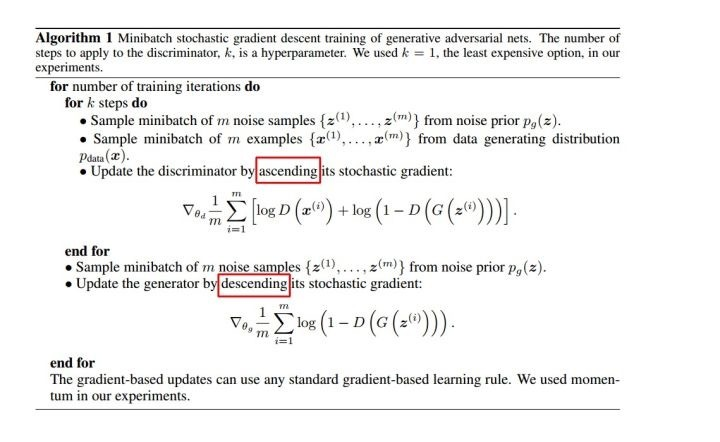

密苏里科技大学EMC LAB工作日志 Day1
GAN网络
- 基本架构：

- 如何训练GAN网络？

- GAN的优点：
- 从实际结果来看,GAN看起来能产生更好的生成样本
- GAN框架可以训练任何生成网络(理论上，然而在实践中,很难使用增强学习去训练有离散输出的生成器),大多数其他架构需要生成器有一些特定的函数形式,就像输出层必须是高斯化的. 另外所有其他框架需要生成器整个都是非零权值(put non-zero mass everywhere),然而,GANs可以学习到一个只在靠近真实数据的地方(神经网络层)产生样本点的模型( GANs can learn models that generate points only on a thin manifold that goes near the data.)
- 没有必要遵循任何种类的因子分解去设计模型,所有的生成器和鉴别器都可以正常工作
- 相比PixelRNN, GAN生成采样的运行时间更短,GANs一次产生一个样本,然而PixelRNNs需要一个像素一个像素的去产生样本;
- 相比VAE, GANs没有变分下界,如果鉴别器训练良好,那么生成器可以完美的学习到训练样本的分布.换句话说,GANs是渐进一致的,但是VAE是有偏差的
- 相比深度玻尔兹曼机, GANs没有变分下界,也没有棘手的配分函数,样本是一次生成的,而不是重复的应用马尔科夫链来生成的
- 相比GSNs, GANs产生的样本是一次生成的,而不是重复的应用马尔科夫链来生成的;
- 相比NICE和Real NVE,GANs没有对潜在变量(生成器的输入值)的大小进行限制;
玻尔兹曼机
- 玻尔兹曼机的定义：
玻尔兹曼机(Boltzmann Machine)可以看做是一个随机动力系统(Stochas- tic Dynamical System)，每个变量的状态都以一定的概率受到其它变量的影 响。玻尔兹曼机可以用概率无向图模型来描述。
- 玻尔兹曼机的特点

- 受限玻尔兹曼机：

- 玻尔兹曼机与受限玻尔兹曼机的区别：是否是全连接的。前者是所有节点全连接，后者只要求不同层之间的节点与另一层中所有节点连接。
- 玻尔兹曼机可以解决的问题：
- 搜索问题。当给定变量之间的 连接权重，需要找到一组二值向量，使得整个网络的能量最低。
- 学习问题。当给一组定部分变量的观测值时，计算一组最优的权重。
深度信念网络
-
定义：深度信念网络(Deep Belief Network，DBN)是一种深层的概率有向图模 型，其图结构由多层的节点构成。每层节点的内部没有连接，相邻两层的节点 之间为全连接。网络的最底层为可观测变量，其它层节点都为隐变量。最顶部 的两层间的连接是无向的，其他层之间的连接是有向的。

-
训练方式：在预训练阶段，采用逐层训练的方式，将深度信念网络的训练简化为对多个受限玻尔兹曼机的训练。